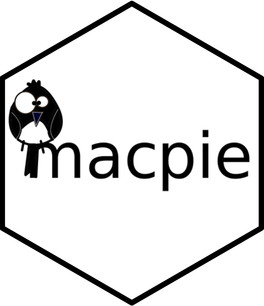

The goal of macpie package is to provide the users of MAC-seq data with the most recent set of tools for QC, visualisation and analysis for this high-throughput transcriptomic platform.
Installation
You can install the development version of macpie like so:
remotes::install_github("https://github.com/PMCC-BioinformaticsCore/macpie")Dependencies
The simplest way is to use our docker container with all the R packages installed.
Inside your docker desktop, open a terminal, paste the docker pull command and install, depending on your platform.
Example
This is a basic example which shows you how to import user-defined data and metadata with some basic QC.
library(macpie)
#load metadata
project_metadata <- system.file("extdata/PMMSq033/PMMSq033_metadata.csv", package = "macpie")
# Load metadata
metadata <- read_metadata(project_metadata)
project_rawdata <- system.file("extdata/PMMSq033/raw_matrix", package = "macpie")
raw_counts_total <- Read10X(data.dir = project_rawdata)
keep <- rowSums(cpm(raw_counts_total) >= 10) >= 2
raw_counts <- raw_counts_total[keep, ]
#create tidySeurat object
mac <- CreateSeuratObject(counts = raw_counts,
project = project_name,
min.cells = 1,
min.features = 1)
#join with metadata
mac <- mac %>%
inner_join(metadata, by = c(".cell" = "Barcode"))
#add unique identifier
mac <- mac %>%
mutate(combined_id = str_c(Treatment_1, Concentration_1, sep = "_")) %>%
mutate(combined_id = gsub(" ", "", .data$combined_id))
#example of MDS function, using limma
p <- plot_mds(mac, group_by = "Sample_type", label = "combined_id", n_labels = 30)
girafe(ggobj = p, fonts = list(sans = "sans"))
#RLE function
plot_rle(mac, label_column = "Row", normalisation = "limma_voom")
#Calculate qc metrics for each condition
qc_stats <- compute_qc_metrics(mac, group_by = "combined_id", order_by = "median")
qc_stats$stats_summary
#Plot qc metrics
plot_qc_metrics_heatmap(qc_stats$stats_summary)